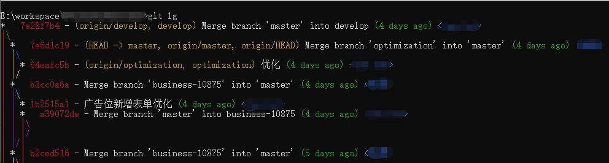

Git命令配置篇
配置篇
概念
Remote
远程仓库, 托管代码的服务器, 团队协作开发时都与此进行同步
Repository
本机仓库(或版本库), 管理所有被提交的代码版本, 其中 HEAD 指向最新放入仓库的版本
Index / Stage
暂存区, 临时存放改动的需要被提交的文件列表信息
Workspace
工作区, 当前可见的随时可以进行操作的区域
Git 仓库用户凭据
场景: 使用 https 方式与远程仓库同步时, 不想每次都在提示框中输入用户名和密码确认, 此方式在用户家目录下创建(修改) .git-credentials 文件, 存储用户名和密码
清除本地存储的用户名和密码凭据
1
git config --system --unset credential.helper
存储凭据, 在第一次 push 时提示输入
1
git config --global credential.helper store
Git 环境定制
- local: 读取仓库配置文件
.git/config - global: 读取用户配置文件
.gitconfig, 不加默认为仓库配置
显示配置项
1 | git config [--local|--global] -l|--list |
使用 vim 编辑配置文件
1 | git config [--local|--global] -e|--edit |
unset 重置
1 | git config [--global] --unset [key] |
add 添加配置
1 | git config [--global] --add key value |
get 获取配置
1 | git config [--global] --get key |
alias 命令缩写
1 | git config [--global] alias.* value |
alias.log 美化
%H commit hash
%h commit short hash
%T tree hash
%t tree short hash
%P parent hash
%p parent short hash
%a[n|N] 作者名字
%a[e|E] 作者邮箱
%a[d|D|r|t|i] 日期格式
%c[n|N] 提交者名字
%c[e|E] 提交者邮箱
%c[d|D|r|t|i] 提交的日期格式
%d ref 名称
%e encoding
%s commit 信息标题
%f 过滤 commit 信息的标题使之可以作为文件名
%b commit 信息内容
%N commit notes
%g[D|d] reflog selector
%gs reflog subject
%Cred 切换至红色
%Cgreen 切换至绿色
%Cblue 切换至蓝色
%Creset 重设颜色
%C(color) 指定颜色
%n 换行
%m left right or boundary mark
%%a raw %
%x00 print a byte from a hex code
%w([[,[,]]]) switch line wrapping, like the -w option of git-shortlog(1).
1
git config [--global] alias.lg "log --color --graph --pretty=format:'%Cred%h%Creset -%C(yellow)%d%Creset %s %Cgreen(%cr) %C(bold blue)<%an>%Creset' --abbrev-commit"

remote 设置
1 | git remote -v|--verbose |
add 添加
1 | git remote add name url |
remove 删除
1 | git remote remove name |
rename 修改关联仓库名称
1 | git remote rename old new |
set-url 设置关联仓库地址
push: 设置推送 url
add: 保持当前的 url,并添加一个新的 url
delete: 将删除匹配到的 url, 并添加一个新的 url
1
git remote set-url [--push|--add|--delete] name url
get-url 获取关联仓库地址
push: 获取推送 url
all: 获取所有 url
1
git remote get-url [--push|--all] name